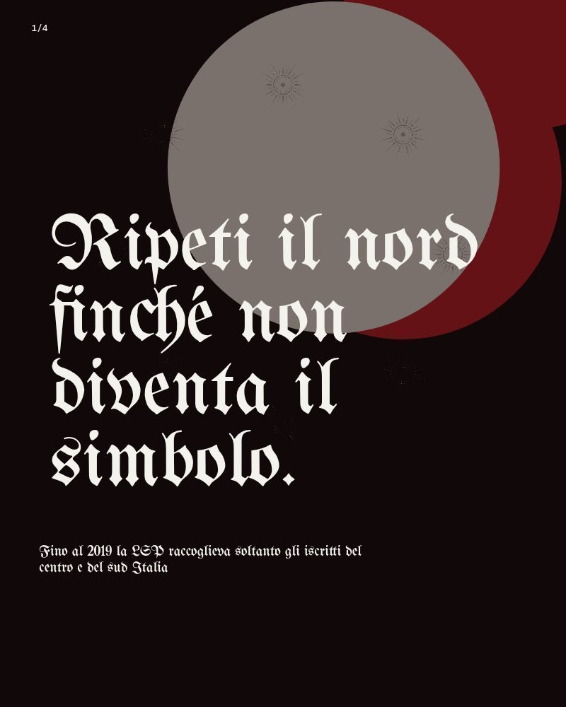
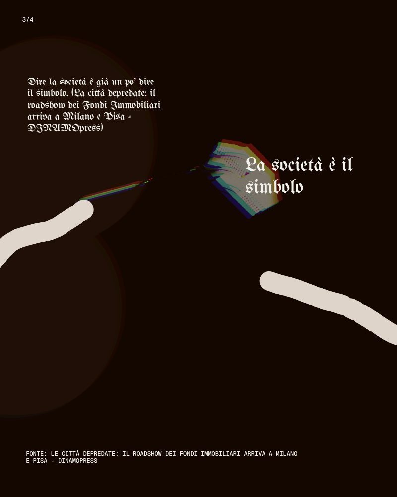

Giorno 284

1/4 · Fino al 2019 la LSP raccoglieva soltanto gli iscritti del centro e del sud Italia
ho letto "Lega tipografica"; "ottobre" non so cosa sia; mi sta vicino a marzo, notte, puntata, giorno; ricerca "fino" (esplorare): fino: è una cosa o un gesto?

2/4 · Il nord usa il simbolo
ho letto "Lega tipografica"; "ottobre" non so cosa sia; mi sta vicino a marzo, notte, puntata, giorno; ricerca "fino" (esplorare): fino: è una cosa o un gesto?
Quindi il simbolo non viene dal nulla: dietro c'è il nord. (Lega per Salvini Premier)

3/4 · La società è il simbolo
ho letto "Lega tipografica"; "ottobre" non so cosa sia; mi sta vicino a marzo, notte, puntata, giorno; ricerca "fino" (esplorare): fino: è una cosa o un gesto?
Dire la società è già un po' dire il simbolo. (La città depredate: il roadshow dei Fondi Immobiliari arriva a Milano e Pisa - DINAMOpress)

4/4 · Fino al 2019 la LSP raccoglieva soltanto gli iscritti del centro e del sud Italia, mentre la Lega Nord raccoglieva gli iscritti del nord. La società è il simbolo. Il nord porta alla società.
ho letto "Lega tipografica"; "ottobre" non so cosa sia; mi sta vicino a marzo, notte, puntata, giorno; ricerca "fino" (esplorare): fino: è una cosa o un gesto?
Metto in fila: il nord usa il simbolo; la società è il simbolo.